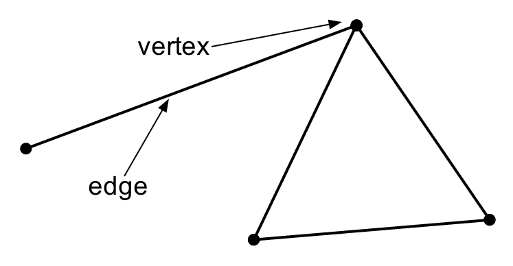
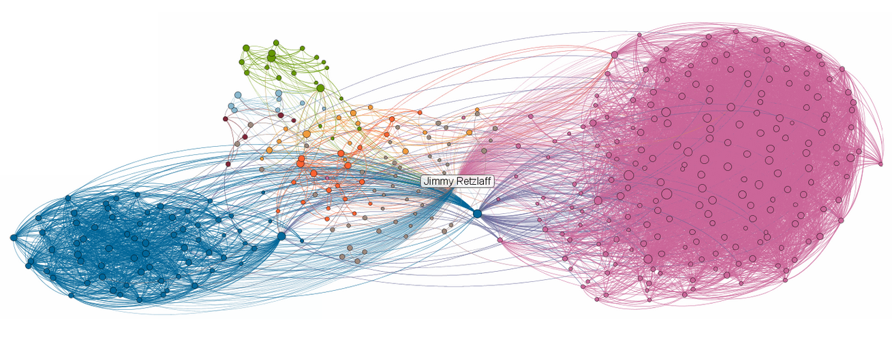
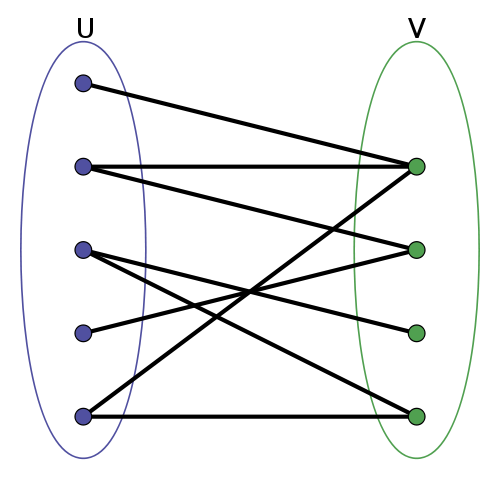

name: inverse layout: true class: left, top, inverse --- # Graphs & Networks --- ## Graphs + Graphs (or networks) can model a surprising number of domains + Modeling with graphs opens up a large number of algorithms + Linear Algebra has many connections to graphs ??? ## Math + Data mining theme: get your problem stated as a math problem, whole slew of solutions present themselves + Linear Algebra is really useful for running equations of all nodes, or simulate moving across network --- ## Vertices & Edges + Vertex + the interconnected objects, or nodes + Edge + the lines or curves that connect vertices + Graph + Collection of vertices and edges ```G = (V,E)``` .white-background[  ] ??? ## Definitions + These are the abstract terms, how do they relate to the real world? --- ## Examples + Vertex + User, building, router, product + Edge + Relationship, road, network cable, purchased + Graph + Social Network, physical infrastructure, Internet, purchasing history ??? ## Examples + Many graphs have assumed edge labels + the edges represent something consistent + Some graphs have multiple types of edges + relationship is one of family, friend, co-worker, etc. + Edge can be anything that ties two things together + purchase history, e.g., is not a physical thing connecting, but an idea --- ## Social Networks + An edge connects two people + If this is just a line, what information are we missing about how the link was formed?  ??? ## Symmetric vs. Asymmetric Edges + "Just a line" is called *undirected* + We're missing information about who invited whom. That would be expressed as an arrow and is called *directed*. --- ## Definitions + Directed: Connections have a direction. Invitations, water pipes, email. + Undirected: Connections have no direction. Friends, walkways on campus, physical wires. + Cycle: Set of nodes and edges in which you can travel back to a vertex + Acyclic: A graph without any cycles <img src="img/Directed_acyclic_graph.png" width=60% /> ??? ## Modeling + Can always model an undirected graph as a directed graph by having two directed edges going in opposite directions in place of each undirected edge. --- ## Acyclic? + Social network (undirected) + Product purchases (directed) + Internet links (directed) + Class prerequisites (directed) ??? ## Answers + Social network: cyclic + Product purchases: acyclic + Internet links: cyclic + Class prerequisites: acyclic --- ## Bipartite .left-column[ + Graph whose vertices can be divided into two distinct sets + Vertices in ```U``` are only connected to those in ```V```, vice versa + Product purchases: users ```U```, products ```V``` ] .right-column[ .white-background[  ] ] ??? ## Recommendations + Can model recommendations as link following: + From a user, follow to products + From products, follow back to other users + From other users, follow back to products --- ## Measurements + Geodesic distance + Number of edges to connect two vertices + Eccentricity of ```v``` + Largest geodesic distance from ```v``` to the most distant vertex + Radius + Minimum eccentricity of any vertex in the graph + Diameter + Maximum eccentricity of any vertex in the graph + Peripheral vertex + Vertex with eccentricity == diameter + Incoming/Outgoing edge count of a vertex + Number of edges coming in/out of a vertex ??? ## Data Stats + Similar to getting distribution stats from initial datasets, these measurements can help you understand graphs as a summary + Once you have the incoming/outgoing edge counts, you can use regular stats: what is the distribution of counts? --- ## Examples .white-background[ <img src="img/6n-graf.svg.png" width=100% /> ] ??? ## Answers + Distance 6, 5: 2 + Eccentricity 2: 3 (disconnected graph is infinity) + Radius: 2 + Diameter: 3 + Peripheral Verticies: 1, 2, 6 --- ## Connections + Connected + there exists a path from one vertex to another + Connectivity + minimum number of vertices to remove to disconnect remaining vertices + Clustering Coefficient + Measure of how connected a vertex or group of vertices are ??? ## Robustness + This is used to understand robustness of a system: if an earthquake damaged the Bay Bridge, could we still travel from one point to another? + What is the connectedness of Oakland and SF? + Closely related to min-cuts, which is discussed in the book + Network topology: what happens if a router fails? --- ## Clustering Coefficient + How many directed edges are possible between 3 vertices? + 4 vertices? + ```v*(v-1)``` + Undirected? + ```v*(v-1)/2``` + Clustering Coefficient: Ratio of actual edges to possible edges amongst neighbors ??? ## Reading + Used in Reading this week + ```v*(v-1)``` connection to every other node but yourself + ```/2``` undirected, don't double count connections --- ## Example .center[ .white-background[ <img src="img/6n-graf.svg.png" width=90% /> ] ] ??? ## Answer + Clustering Coefficient of 1: + Neighbors of 1: 5 2 + 2*(2-1) / 2 = 1 + Actual links = 1 + Clustering Coefficient of 4: + Neighbors of 4: 3,5,6 + 3*(3-1) / 2 = 3 + Actual: 0 + If 3-5 connected? 1/3 --- ## Random Walk + Many algorithms based on concept of randomly deciding: + Follow link or not + Which link to follow + Simulate the decision many times + What is the probability you will wind up on ```u``` from ```v```? --- # *Break*